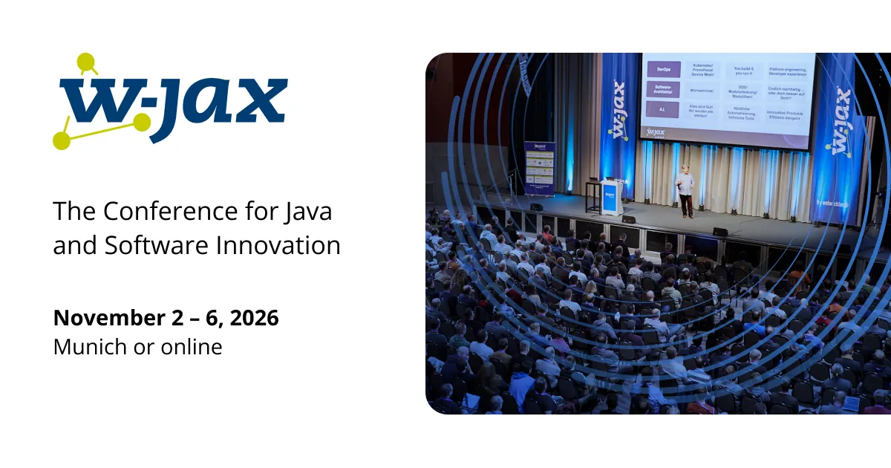
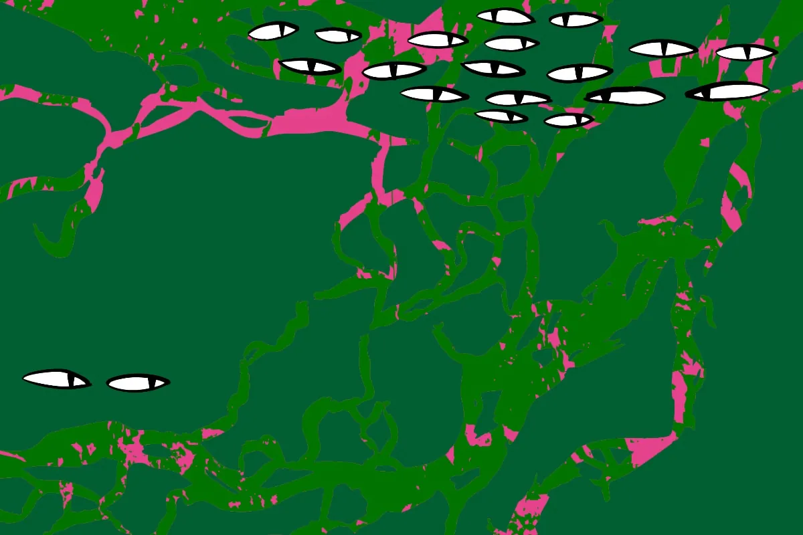
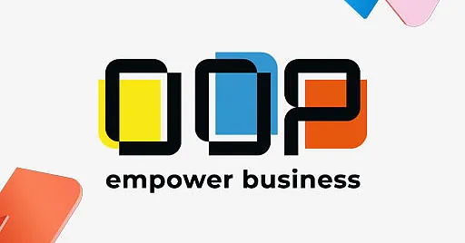

JAN
01January
MTWTFSS
- 15–17 DLD Munich 26pastHouse of Communication · 2 stages · 120+ sessions
AI · quantum · biotech · energy [3]
Marquee conferences and Messe trade fairs pinned to their months. The always-on meetup circuit runs in the margin.



For a weekend trip that lands on a Mon/Tue/Wed evening, the meetup circuit is the path of least resistance — free, drop-in, no badge.
↓ what runs every month ↓
5-min lightning demos · running code only · no slides allowed · ~3hr · hosted at CDTM. Filters for builders rather than the keynote circuit [16].
Talks + networking at Giesinger Bräu Werk2. Slides, YouTube content, free RSVP [18].
Talks · rotating sponsors. The local arm of the dev-conference scene between W-JAX, DevOpsCon and Cloud Native Summit cycles [19].
May 21 at Munich Urban Colab · ~600 hand-picked changemakers and international visionaries · Europe's Leading Startup Hub flagship [17].